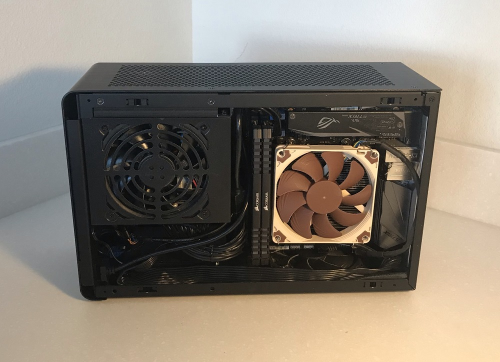

This week we read a pretty
interesting article
on game UX/UI design. To be completely honest, I felt a
little uneasy reading the article. There a was implicit
focus on taking advantage of low-level human desires and
stimuli. As a result of this, it seemed like there was
an almost predatory focus on the market of mobile games
for children. Unfortunately, this is the way that mobile
game design would head toward anyway, and is ultimately
inevitable. The guidelines themselves seem simple
enough. They focus on taking a step back and thinking
about what the average person would do when given a
certain design element and how to engineer that for what
we, as the designers, want.
Fourth Learning Journal

Tim Stewart, 2021.
Shown above is a picture of my PC. I've had it for many
many years, but throughout those years it has taken
different forms. I like to think of it as my own
personal ship of Theseus. Every single part has been
exchanged at one time or another since I first built it
sometime in middle school. Is it still the same PC?
Thought experiments aside, its a tool that I use so
often that I've put it into a case that I can take with
me anywhere. I hope that in my studio project, I can
find a way to do justice to my PC and showcase its
current parts in a way that anyone could understand.
Third Learning Journal
This week, I explored the website
How Many Plants. What stood out to me the most was its striking
display on the homepage. The shelves have various books
and plants arranged in a manner that is aesthetically
pleasing and allows for the greenery to stand out. Aside
from this, I found the interaction pleasing. It really
brings the focus to the plants when you're able to hover
over them and cause an animation to play. I expected a
little more interaction if I clicked on a plant, so it
was jarring when nothing happened. It is definitely
something that I would've liked to see. Overall, this
site showcases great usage of images to portray the bond
and care humans have for plants, and I certainly hope to
similarly provide such a communicative user experience.
Second Learning Journal
Out of the two articles offered as options, I opted for
the
latter one, by Kathryn Whitenton of the Nielson Norman Group. I
had previously encountered one of their articles from
the last Learning Journal, so I knew what I would read
would be good. I found the fact that it provided clear
guidelines to follow very neat. As I kept reading,
however, I came to the realization that there are
probably hundreds of clear, objective guidelines to
follow in regards to usability on the web. How could
anyone ever keep track of all of them and stay within
them at all times? I thought perhaps there could be a
single, giant resource with everything one needs to know
about UX on it. As I went over different ideas and
scenarios in my head, an even simpler solution presented
itself. Surely, practice would engrain these concepts
far better than any book or article can. Only time will
tell...
First Learning Journal
Anything a user has to interact with needs special
consideration and care when being designed. This is
especially true for forms, where a user can provide
valuable input. Personally, form design is something
I've always struggled with. I'm never quite sure of how
to make the best form, even though they're incredibly
vital to most projects I work on. Because of this, I
found the
article provided
to be very helpful. It gives actionable and objective
guidelines to follow that makes it really easy to create
a well-designed form. One thing I found interesting was
the comments on the article. In particular, a user
points out that NN group's article on
"Marking Required Fields in Forms"
contradicts point 5 in the UX Collective's article. I
think that explicitly stating which form fields are
required is a good thing, but I'll definitely experiment
around with it to find the option that works best for
me.